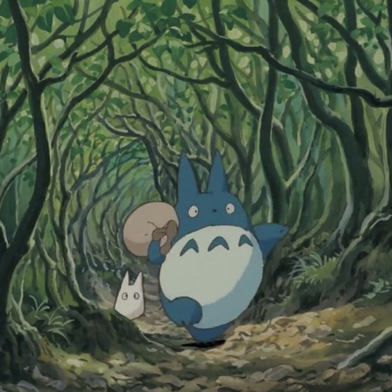
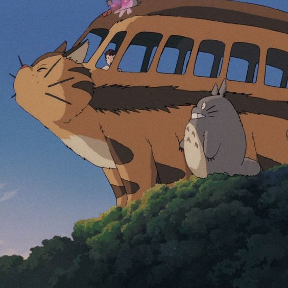

STUDIO GHIBLI
spirited away
kiki's delivery service
my neighbour totoro


Studio ghibli is a Japanese animation studio based in Koganei Tokyo. It's one of the most popular animation studios of all time. Known for the high quality of filmmaking and its artistry. They are most known for My Neighbour Totoro, Spirited Away, Howl's Moving Castle and Ponyo. They're all highly praised movies and have won countless awards.
It was founded on June 15, 1985 and they released their first movie, Nausica. A post-apocalypic fantasy film. Unfortunately the western release for this movie was horribly done and Miyazaki refused for a long time for any Studio Ghibli movies to be released in the West for many years. However a deal with Walt Disney changed it and the following year Princess Mononoke was released.
Most of Studio Ghibli's movies tackle common themes such as environmentalism, friendship, family, Japanese history and war and love. Together with these themes and the employment of immersive realism in their visual storytelling makes Studio Ghibli so special. Many people feel very nostalgic about them and they make you feel as if you're apart of this magical world. Even the most normal things start to feel meaningful such as cooking a meal or having fun with your friends. They give you a new outlook on life, a new appreciation. Appreciation for the small things in everyday life.
Their mascot is a well known character, Totoro, from the movie My Neighbour Totoro.
Hayao miyazaki is a Japanese director, animator and cartoonist born on January 5, 1941 in Tokyo. He is the co-founder of Studio Ghibli together with Toshi Suzuki, Isao Takahata and Yasuyoshi Tokuma. Although they co-founded it together Miyazaki wrote and directed most of the movies. That's why most people only know about him.
Miyazaki's father was the director of Miyazaki Airplane, because of the family business Miyazaki had a love for flying and you can see it in most of his works for example in Kiki's Delivery Service. After completing his studies in economics he took an entry level animator position at Toei animation. Where he met Takahata and Akemi both of them becoming important figures in his life. Takahata is his business partner and friend and Akemi is his spouse. After leaving Toei in 1971 together with Takahata they continued working at multiple different studios till they launched Studio Ghibli in 1985.
Now in 2023 Miyazaki anounced his retirement and released his final movie called The boy and the Heron. The movie has been released in Japan, but the US release will be on december 8.
Although Miyazaki announced his retirement he might not quit yet as he's done this before a few times and then a few years laters came back with a new movie.